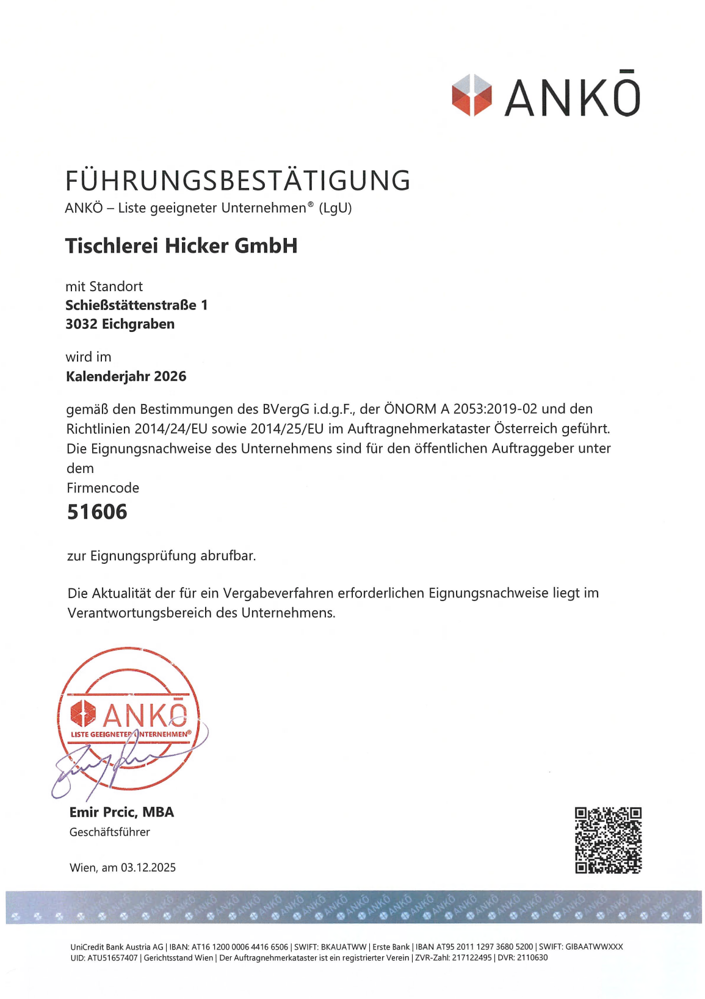

Impressum / Datenschutzerklärung
Impressum
Angaben gemäß Informationspflicht laut §5 E-Commerce Gesetz, §14 Unternehmensgesetzbuch, §63 Gewerbeordnung und Offenlegungspflicht laut §25 Mediengesetz.
Tischlerei Hicker GmbH
Schießstättenstr. 1,
3032 Eichgraben,
Österreich
Unternehmensgegenstand: Tischler, Handelsgewerbe, eingeschränkt auf den Einzelhandel
UID-Nummer: ATU61949422
GLN: 9110016838199
GISA: 13977511, 13977504
Firmenbuchnummer: FN 266879 w
Firmenbuchgericht: Landesgericht St. Pölten
Firmensitz: 3032 Eichgraben
Tel.: +43 2773 43347
E-Mail: tischlerei@tischlereihicker.at;office@tischlereihicker.at
Mitglied bei: WKO, Landesinnung, etc.
Berufsrecht: Gewerbeordnung: www.ris.bka.gv.at
Aufsichtsbehörde/Gewerbebehörde: Bezirkshauptmannschaft Sankt Pölten
Berufsbezeichnung: Tischler, Handelsgewerbe, eingeschränkt auf den Einzelhandel
Verleihungsstaat: Österreich
Geschäftsführer
Wolfgang Hicker
Beteiligungsverhältnisse
Gesellschafter Herr Hicker Friedrich Privatperson Anteil: 40,00%
Gesellschafter Herr Hicker Wolfgang Privatperson Anteil: 60,00%
Kontaktdaten des Verantwortlichen für Datenschutz
Sollten Sie Fragen zum Datenschutz haben, finden Sie nachfolgend die Kontaktdaten der verantwortlichen Person bzw. Stelle:
Tischlerei Hicker GmbH
Schießstättenstr. 1
3032 Eichgraben
E-Mail-Adresse: tischlerei@tischlereihicker.at;office@tischlereihicker.at
Telefon: +43 2773 43347
Impressum: https://www.tischlereihicker.at/impressum
EU-Streitschlichtung
Gemäß Verordnung über Online-Streitbeilegung in Verbraucherangelegenheiten (ODR-Verordnung) möchten wir Sie über die Online-Streitbeilegungsplattform (OS-Plattform) informieren.
Verbraucher haben die Möglichkeit, Beschwerden an die Online Streitbeilegungsplattform der Europäischen Kommission unter https://ec.europa.eu/consumers/odr/main/index.cfm?event=main.home2.show&lng=DE zu richten. Die dafür notwendigen Kontaktdaten finden Sie oberhalb in unserem Impressum.
Wir möchten Sie jedoch darauf hinweisen, dass wir nicht bereit oder verpflichtet sind, an Streitbeilegungsverfahren vor einer Verbraucherschlichtungsstelle teilzunehmen.
Haftung für Inhalte dieser Website
Wir entwickeln die Inhalte dieser Website ständig weiter und bemühen uns korrekte und aktuelle Informationen bereitzustellen. Leider können wir keine Haftung für die Korrektheit aller Inhalte auf dieser Website übernehmen, speziell für jene, die seitens Dritter bereitgestellt wurden. Als Diensteanbieter sind wir nicht verpflichtet, die von Ihnen übermittelten oder gespeicherten Informationen zu überwachen oder nach Umständen zu forschen, die auf eine rechtswidrige Tätigkeit hinweisen.
Unsere Verpflichtungen zur Entfernung von Informationen oder zur Sperrung der Nutzung von Informationen nach den allgemeinen Gesetzen aufgrund von gerichtlichen oder behördlichen Anordnungen bleiben auch im Falle unserer Nichtverantwortlichkeit davon unberührt.
Sollten Ihnen problematische oder rechtswidrige Inhalte auffallen, bitte wir Sie uns umgehend zu kontaktieren, damit wir die rechtswidrigen Inhalte entfernen können. Sie finden die Kontaktdaten im Impressum.
Haftung für Links auf dieser Website
Unsere Website enthält Links zu anderen Websites für deren Inhalt wir nicht verantwortlich sind. Haftung für verlinkte Websites besteht für uns nicht, da wir keine Kenntnis rechtswidriger Tätigkeiten hatten und haben, uns solche Rechtswidrigkeiten auch bisher nicht aufgefallen sind und wir Links sofort entfernen würden, wenn uns Rechtswidrigkeiten bekannt werden.
Wenn Ihnen rechtswidrige Links auf unserer Website auffallen, bitte wir Sie uns zu kontaktieren. Sie finden die Kontaktdaten im Impressum.
Urheberrechtshinweis
Alle Inhalte dieser Webseite (Bilder, Fotos, Texte, Videos) unterliegen dem Urheberrecht. Bitte fragen Sie uns bevor Sie die Inhalte dieser Website verbreiten, vervielfältigen oder verwerten wie zum Beispiel auf anderen Websites erneut veröffentlichen. Falls notwendig, werden wir die unerlaubte Nutzung von Teilen der Inhalte unserer Seite rechtlich verfolgen.
Sollten Sie auf dieser Webseite Inhalte finden, die das Urheberrecht verletzen, bitten wir Sie uns zu kontaktieren.
Alle Texte sind urheberrechtlich geschützt.
Quelle: Erstellt mit dem Impressum Generator von AdSimple
Datenschutzerklärung
Anwendung EGGER inside Möbelplaner (Möbelplaner und Möbelplaner PRO)
Der Möbelplaner ist eine Anwendung, mit der Sie ein Möbelstück nach Ihren individuellen Bedürfnissen
erstellen können. Diese Anwendung wird von einem externen Dienstleister, der EGGER Holzwerkstoffe Brilon
GmbH&Co KG, zur Verfügung gestellt. Wenn Sie im Möbelplaner eine Angebotsanfrage vornehmen möchten,
ist die Angabe Ihrer persönlichen Daten für die Bearbeitung und die Abwicklung der Angebotsanfrage
erforderlich. Entsprechende Pflichtfelder sind für die Erstellung eines Angebots notwendig und gekennzeichnet.
Ihre Daten werden für die Dauer der Bearbeitung Ihres Angebots gespeichert, sofern keine
Aufbewahrungsfristen diesem entgegenstehen. Rechtsgrundlage hierfür ist die Vertragsanbahnung gem. Art.
6 Abs. 1 lit. b DSGVO.
Damit Sie die Möglichkeit haben, Ihr geplantes Möbelstück jederzeit zu speichern und zu einem späteren
Zeitpunkt weiter zu bearbeiten, ohne eine Angebotsanfrage direkt abzuschicken, benötigen wir für die
Speicherung die Angabe Ihrer persönlichen Daten notwendig (Vor- und Nachname, Firma/Adresszusatz,
Strasse, Nr., PLZ, Ort, Kundenkontokennwort, E-Mail Adresse, Tel.-Nr.). Alternativ kann während des
Vorganges ein passwortgeschütztes Kundenkonto eingerichtet werden. Im Rahmen der Registrierung werden
zusätzlich erhoben: IP-Adresse, Endgerättyp, Grafikauflösung, Datum und Uhrzeit der Registrierung und die
Verweildauer. Rechtsgrundlage ist dann Ihre Einwilligung gem. Art. 6 Abs. 1 lit. a DSGVO. Die Einwilligung
können Sie jederzeit mit Wirkung für die Zukunft widerrufen. Ihr Account und gespeicherten Möbelstücke
werden dann gelöscht.
Die Daten werden zudem durch EGGER zur Bereitstellung von anonymisierten Reportings über die Nutzung
des Möbelplaners verwendet werden. Rechtsgrundlage hierfür ist das berechtigte Interesse von EGGER an
der Produktentwicklung des Möbelplaners. Im Rahmen dessen können weitere Daten zu Analysezwecken
erhoben werden. Hierfür ist der Anbieter des Möbelplaners verantwortlich. Weitere Informationen hierzu finden
Sie unter www.egger-inside.com
Darüber hinaus kann es notwendig sein, dass Sie in die Verwendung des Möbelplaners zustimmen müssen,
da der Möbelplaner über einen sogenannten iFrame eingebunden werden. Rechtsgrundlage hierfür ist Art. 6
Abs. 1 lit. a DSGVO i. V. m. § 25 Abs. 1 TDDDG.
Die Daten werden gelöscht, sobald sie für die Erreichung des Zweckes ihrer Erhebung nicht mehr erforderlich
sind. Dies ist für die während des Registrierungsvorgangs zur Bearbeitung der Angebotsanfrage sowie zur
Durchführung vorvertraglicher Maßnahmen abgegebenen Daten dann der Fall, wenn die Daten für die
Durchführung der Angebotsanfrage, der Bestellung oder des sich evtl. anschließenden Vertrages nicht mehr
erforderlich sind. Auch nach Abschluss des Vertrags kann eine Erforderlichkeit, personenbezogene Daten des
Vertragspartners zu speichern, bestehen, um vertraglichen oder gesetzlichen Verpflichtungen nachzukommen.
Wir sind aufgrund handels- und steuerrechtlicher Vorgaben verpflichtet, Ihre Adress-, Zahlungs- und
Bestelldaten für die Dauer von 10 Jahren zu speichern.
Ihre Daten werden über die Anwendung des Möbelplaners an den Betreiber EGGER Holzwerkstoffe Brilon
GmbH&Co KG, Im Kissen 19, D-59929, Brilon übermittelt, gespeichert und zur Abwicklung Ihrer
Angebotsanfrage bzw. zur Vertragserfüllung verarbeitet. Zwecks Gewährleistung und Sicherstellung des
datenschutzrechtlich-konformen Umgangs mit Ihren Daten haben wir mit EGGER einen Vertrag zur
Auftragsverarbeitung abgeschlossen. Zur Verhinderung unberechtigter Zugriffe Dritter auf Ihre persönlichen
Daten, insbesondere Finanzdaten, wird der Bestellvorgang per TLS-Technik verschlüsselt.
Die Daten werden ausschließlich auf Servern mit Standort in der Europäischen Union gehostet. Hierzu greifen
wir auf die Dienstleistungen der Microsoft Azure Cloud zurück. Hierzu haben wir mit Microsoft neben den
Standardvertragsklauseln und einem Auftragsverarbeitungsvertrag auch weitreichende Regelungen zum
Datenschutz für Microsoft-Onlinedienste (Data Protection Addendum, DPA) abgeschlossen. Es ist vereinbart,
dass Microsoft die Daten ausschließlich in der EU speichert. Die Verarbeitung durch Microsoft unterliegt dabei
den DSGVO-Bestimmungen nach dem Recht der Europäischen Union.
Weitere Informationen zur Durchsetzung Ihrer Rechte bei Microsoft können Sie hier finden:
https://privacy.microsoft.com/de-de/privacystatemen
Einleitung und Überblick
Wir haben diese Datenschutzerklärung (Fassung 28.08.2022-122107914) verfasst, um Ihnen gemäß der Vorgaben der Datenschutz-Grundverordnung (EU) 2016/679 und anwendbaren nationalen Gesetzen zu erklären, welche personenbezogenen Daten (kurz Daten) wir als Verantwortliche – und die von uns beauftragten Auftragsverarbeiter (z. B. Provider) – verarbeiten, zukünftig verarbeiten werden und welche rechtmäßigen Möglichkeiten Sie haben. Die verwendeten Begriffe sind geschlechtsneutral zu verstehen.
Kurz gesagt: Wir informieren Sie umfassend über Daten, die wir über Sie verarbeiten.
Datenschutzerklärungen klingen für gewöhnlich sehr technisch und verwenden juristische Fachbegriffe. Diese Datenschutzerklärung soll Ihnen hingegen die wichtigsten Dinge so einfach und transparent wie möglich beschreiben. Soweit es der Transparenz förderlich ist, werden technische Begriffe leserfreundlich erklärt, Links zu weiterführenden Informationen geboten und Grafiken zum Einsatz gebracht. Wir informieren damit in klarer und einfacher Sprache, dass wir im Rahmen unserer Geschäftstätigkeiten nur dann personenbezogene Daten verarbeiten, wenn eine entsprechende gesetzliche Grundlage gegeben ist. Das ist sicher nicht möglich, wenn man möglichst knappe, unklare und juristisch-technische Erklärungen abgibt, so wie sie im Internet oft Standard sind, wenn es um Datenschutz geht. Ich hoffe, Sie finden die folgenden Erläuterungen interessant und informativ und vielleicht ist die eine oder andere Information dabei, die Sie noch nicht kannten.
Wenn trotzdem Fragen bleiben, möchten wir Sie bitten, sich an die unten bzw. im Impressum genannte verantwortliche Stelle zu wenden, den vorhandenen Links zu folgen und sich weitere Informationen auf Drittseiten anzusehen. Unsere Kontaktdaten finden Sie selbstverständlich auch im Impressum.
Anwendungsbereich
Diese Datenschutzerklärung gilt für alle von uns im Unternehmen verarbeiteten personenbezogenen Daten und für alle personenbezogenen Daten, die von uns beauftragte Firmen (Auftragsverarbeiter) verarbeiten. Mit personenbezogenen Daten meinen wir Informationen im Sinne des Art. 4 Nr. 1 DSGVO wie zum Beispiel Name, E-Mail-Adresse und postalische Anschrift einer Person. Die Verarbeitung personenbezogener Daten sorgt dafür, dass wir unsere Dienstleistungen und Produkte anbieten und abrechnen können, sei es online oder offline. Der Anwendungsbereich dieser Datenschutzerklärung umfasst:
-
- alle Onlineauftritte (Websites, Onlineshops), die wir betreiben
- Social Media Auftritte und E-Mail-Kommunikation
- mobile Apps für Smartphones und andere Geräte
Kurz gesagt: Die Datenschutzerklärung gilt für alle Bereiche, in denen personenbezogene Daten im Unternehmen über die genannten Kanäle strukturiert verarbeitet werden. Sollten wir außerhalb dieser Kanäle mit Ihnen in Rechtsbeziehungen eintreten, werden wir Sie gegebenenfalls gesondert informieren.
Rechtsgrundlagen
In der folgenden Datenschutzerklärung geben wir Ihnen transparente Informationen zu den rechtlichen Grundsätzen und Vorschriften, also den Rechtsgrundlagen der Datenschutz-Grundverordnung, die uns ermöglichen, personenbezogene Daten zu verarbeiten.
Was das EU-Recht betrifft, beziehen wir uns auf die VERORDNUNG (EU) 2016/679 DES EUROPÄISCHEN PARLAMENTS UND DES RATES vom 27. April 2016. Diese Datenschutz-Grundverordnung der EU können Sie selbstverständlich online auf EUR-Lex, dem Zugang zum EU-Recht, unter https://eur-lex.europa.eu/legal-content/DE/ALL/?uri=celex%3A32016R0679 nachlesen.
Wir verarbeiten Ihre Daten nur, wenn mindestens eine der folgenden Bedingungen zutrifft:
-
- Einwilligung (Artikel 6 Absatz 1 lit. a DSGVO): Sie haben uns Ihre Einwilligung gegeben, Daten zu einem bestimmten Zweck zu verarbeiten. Ein Beispiel wäre die Speicherung Ihrer eingegebenen Daten eines Kontaktformulars.
- Vertrag (Artikel 6 Absatz 1 lit. b DSGVO): Um einen Vertrag oder vorvertragliche Verpflichtungen mit Ihnen zu erfüllen, verarbeiten wir Ihre Daten. Wenn wir zum Beispiel einen Kaufvertrag mit Ihnen abschließen, benötigen wir vorab personenbezogene Informationen.
- Rechtliche Verpflichtung (Artikel 6 Absatz 1 lit. c DSGVO): Wenn wir einer rechtlichen Verpflichtung unterliegen, verarbeiten wir Ihre Daten. Zum Beispiel sind wir gesetzlich verpflichtet Rechnungen für die Buchhaltung aufzuheben. Diese enthalten in der Regel personenbezogene Daten.
- Berechtigte Interessen (Artikel 6 Absatz 1 lit. f DSGVO): Im Falle berechtigter Interessen, die Ihre Grundrechte nicht einschränken, behalten wir uns die Verarbeitung personenbezogener Daten vor. Wir müssen zum Beispiel gewisse Daten verarbeiten, um unsere Website sicher und wirtschaftlich effizient betreiben zu können. Diese Verarbeitung ist somit ein berechtigtes Interesse.
Weitere Bedingungen wie die Wahrnehmung von Aufnahmen im öffentlichen Interesse und Ausübung öffentlicher Gewalt sowie dem Schutz lebenswichtiger Interessen treten bei uns in der Regel nicht auf. Soweit eine solche Rechtsgrundlage doch einschlägig sein sollte, wird diese an der entsprechenden Stelle ausgewiesen.
Zusätzlich zu der EU-Verordnung gelten auch noch nationale Gesetze:
-
- In Österreich ist dies das Bundesgesetz zum Schutz natürlicher Personen bei der Verarbeitung personenbezogener Daten (Datenschutzgesetz), kurz DSG.
- In Deutschland gilt das Bundesdatenschutzgesetz, kurz BDSG.
Sofern weitere regionale oder nationale Gesetze zur Anwendung kommen, informieren wir Sie in den folgenden Abschnitten darüber.
Kontaktdaten des Verantwortlichen
Sollten Sie Fragen zum Datenschutz oder zur Verarbeitung personenbezogener Daten haben, finden Sie nachfolgend die Kontaktdaten der verantwortlichen Person bzw. Stelle:
Tischlerei Hicker GmbH
Schießstättenstr. 1
3032 Eichgraben
E-Mail: tischlerei@tischlereihicker.at;office@tischlereihicker.at
Telefon: +43 2773 43347-14
Impressum: https://www.tischlereihicker.at/impressum
Fotos Wolfgang Hicker & Team
© Martin Böhm
Speicherdauer
Dass wir personenbezogene Daten nur so lange speichern, wie es für die Bereitstellung unserer Dienstleistungen und Produkte unbedingt notwendig ist, gilt als generelles Kriterium bei uns. Das bedeutet, dass wir personenbezogene Daten löschen, sobald der Grund für die Datenverarbeitung nicht mehr vorhanden ist. In einigen Fällen sind wir gesetzlich dazu verpflichtet, bestimmte Daten auch nach Wegfall des ursprüngliches Zwecks zu speichern, zum Beispiel zu Zwecken der Buchführung.
Sollten Sie die Löschung Ihrer Daten wünschen oder die Einwilligung zur Datenverarbeitung widerrufen, werden die Daten so rasch wie möglich und soweit keine Pflicht zur Speicherung besteht, gelöscht.
Über die konkrete Dauer der jeweiligen Datenverarbeitung informieren wir Sie weiter unten, sofern wir weitere Informationen dazu haben.
Rechte laut Datenschutz-Grundverordnung
Gemäß Artikel 13, 14 DSGVO informieren wir Sie über die folgenden Rechte, die Ihnen zustehen, damit es zu einer fairen und transparenten Verarbeitung von Daten kommt:
-
- Sie haben laut Artikel 15 DSGVO ein Auskunftsrecht darüber, ob wir Daten von Ihnen verarbeiten. Sollte das zutreffen, haben Sie Recht darauf eine Kopie der Daten zu erhalten und die folgenden Informationen zu erfahren:
- zu welchem Zweck wir die Verarbeitung durchführen;
- die Kategorien, also die Arten von Daten, die verarbeitet werden;
- wer diese Daten erhält und wenn die Daten an Drittländer übermittelt werden, wie die Sicherheit garantiert werden kann;
- wie lange die Daten gespeichert werden;
- das Bestehen des Rechts auf Berichtigung, Löschung oder Einschränkung der Verarbeitung und dem Widerspruchsrecht gegen die Verarbeitung;
- dass Sie sich bei einer Aufsichtsbehörde beschweren können (Links zu diesen Behörden finden Sie weiter unten);
- die Herkunft der Daten, wenn wir sie nicht bei Ihnen erhoben haben;
- ob Profiling durchgeführt wird, ob also Daten automatisch ausgewertet werden, um zu einem persönlichen Profil von Ihnen zu gelangen.
- Sie haben laut Artikel 16 DSGVO ein Recht auf Berichtigung der Daten, was bedeutet, dass wir Daten richtig stellen müssen, falls Sie Fehler finden.
- Sie haben laut Artikel 17 DSGVO das Recht auf Löschung („Recht auf Vergessenwerden“), was konkret bedeutet, dass Sie die Löschung Ihrer Daten verlangen dürfen.
- Sie haben laut Artikel 18 DSGVO das Recht auf Einschränkung der Verarbeitung, was bedeutet, dass wir die Daten nur mehr speichern dürfen aber nicht weiter verwenden.
- Sie haben laut Artikel 20 DSGVO das Recht auf Datenübertragbarkeit, was bedeutet, dass wir Ihnen auf Anfrage Ihre Daten in einem gängigen Format zur Verfügung stellen.
- Sie haben laut Artikel 21 DSGVO ein Widerspruchsrecht, welches nach Durchsetzung eine Änderung der Verarbeitung mit sich bringt.
- Wenn die Verarbeitung Ihrer Daten auf Artikel 6 Abs. 1 lit. e (öffentliches Interesse, Ausübung öffentlicher Gewalt) oder Artikel 6 Abs. 1 lit. f (berechtigtes Interesse) basiert, können Sie gegen die Verarbeitung Widerspruch einlegen. Wir prüfen danach so rasch wie möglich, ob wir diesem Widerspruch rechtlich nachkommen können.
- Werden Daten verwendet, um Direktwerbung zu betreiben, können Sie jederzeit gegen diese Art der Datenverarbeitung widersprechen. Wir dürfen Ihre Daten danach nicht mehr für Direktmarketing verwenden.
- Werden Daten verwendet, um Profiling zu betreiben, können Sie jederzeit gegen diese Art der Datenverarbeitung widersprechen. Wir dürfen Ihre Daten danach nicht mehr für Profiling verwenden.
- Sie haben laut Artikel 22 DSGVO unter Umständen das Recht, nicht einer ausschließlich auf einer automatisierten Verarbeitung (zum Beispiel Profiling) beruhenden Entscheidung unterworfen zu werden.
- Sie haben laut Artikel 77 DSGVO das Recht auf Beschwerde. Das heißt, Sie können sich jederzeit bei der Datenschutzbehörde beschweren, wenn Sie der Meinung sind, dass die Datenverarbeitung von personenbezogenen Daten gegen die DSGVO verstößt.
- Sie haben laut Artikel 15 DSGVO ein Auskunftsrecht darüber, ob wir Daten von Ihnen verarbeiten. Sollte das zutreffen, haben Sie Recht darauf eine Kopie der Daten zu erhalten und die folgenden Informationen zu erfahren:
Kurz gesagt: Sie haben Rechte – zögern Sie nicht, die oben gelistete verantwortliche Stelle bei uns zu kontaktieren!
Wenn Sie glauben, dass die Verarbeitung Ihrer Daten gegen das Datenschutzrecht verstößt oder Ihre datenschutzrechtlichen Ansprüche in sonst einer Weise verletzt worden sind, können Sie sich bei der Aufsichtsbehörde beschweren. Diese ist für Österreich die Datenschutzbehörde, deren Website Sie unter https://www.dsb.gv.at/ finden. In Deutschland gibt es für jedes Bundesland einen Datenschutzbeauftragten. Für nähere Informationen können Sie sich an die Bundesbeauftragte für den Datenschutz und die Informationsfreiheit (BfDI) wenden. Für unser Unternehmen ist die folgende lokale Datenschutzbehörde zuständig:
Österreich Datenschutzbehörde
Leiterin: Mag. Dr. Andrea Jelinek
Adresse: Barichgasse 40-42, 1030 Wien
Telefonnr.: +43 1 52 152-0
E-Mail-Adresse: dsb@dsb.gv.at
Website: https://www.dsb.gv.at/
Sicherheit der Datenverarbeitung
Um personenbezogene Daten zu schützen, haben wir sowohl technische als auch organisatorische Maßnahmen umgesetzt. Wo es uns möglich ist, verschlüsseln oder pseudonymisieren wir personenbezogene Daten. Dadurch machen wir es im Rahmen unserer Möglichkeiten so schwer wie möglich, dass Dritte aus unseren Daten auf persönliche Informationen schließen können.
Art. 25 DSGVO spricht hier von “Datenschutz durch Technikgestaltung und durch datenschutzfreundliche Voreinstellungen” und meint damit, dass man sowohl bei Software (z. B. Formularen) also auch Hardware (z. B. Zugang zum Serverraum) immer an Sicherheit denkt und entsprechende Maßnahmen setzt. Im Folgenden gehen wir, falls erforderlich, noch auf konkrete Maßnahmen ein.
TLS-Verschlüsselung mit https
TLS, Verschlüsselung und https klingen sehr technisch und sind es auch. Wir verwenden HTTPS (das Hypertext Transfer Protocol Secure steht für „sicheres Hypertext-Übertragungsprotokoll“), um Daten abhörsicher im Internet zu übertragen.
Das bedeutet, dass die komplette Übertragung aller Daten von Ihrem Browser zu unserem Webserver abgesichert ist – niemand kann “mithören”.
Damit haben wir eine zusätzliche Sicherheitsschicht eingeführt und erfüllen den Datenschutz durch Technikgestaltung (Artikel 25 Absatz 1 DSGVO). Durch den Einsatz von TLS (Transport Layer Security), einem Verschlüsselungsprotokoll zur sicheren Datenübertragung im Internet, können wir den Schutz vertraulicher Daten sicherstellen.
Sie erkennen die Benutzung dieser Absicherung der Datenübertragung am kleinen Schlosssymbol  links oben im Browser, links von der Internetadresse (z. B. beispielseite.de) und der Verwendung des Schemas https (anstatt http) als Teil unserer Internetadresse.
links oben im Browser, links von der Internetadresse (z. B. beispielseite.de) und der Verwendung des Schemas https (anstatt http) als Teil unserer Internetadresse.
Wenn Sie mehr zum Thema Verschlüsselung wissen möchten, empfehlen wir die Google Suche nach “Hypertext Transfer Protocol Secure wiki” um gute Links zu weiterführenden Informationen zu erhalten.
Kommunikation
| Kommunikation Zusammenfassung 👥 Betroffene: Alle, die mit uns per Telefon, E-Mail oder Online-Formular kommunizieren 📓 Verarbeitete Daten: z. B. Telefonnummer, Name, E-Mail-Adresse, eingegebene Formulardaten. Mehr Details dazu finden Sie bei der jeweils eingesetzten Kontaktart 🤝 Zweck: Abwicklung der Kommunikation mit Kunden, Geschäftspartnern usw. 📅 Speicherdauer: Dauer des Geschäftsfalls und der gesetzlichen Vorschriften ⚖️ Rechtsgrundlagen: Art. 6 Abs. 1 lit. a DSGVO (Einwilligung), Art. 6 Abs. 1 lit. b DSGVO (Vertrag), Art. 6 Abs. 1 lit. f DSGVO (Berechtigte Interessen) |
Wenn Sie mit uns Kontakt aufnehmen und per Telefon, E-Mail oder Online-Formular kommunizieren, kann es zur Verarbeitung personenbezogener Daten kommen.
Die Daten werden für die Abwicklung und Bearbeitung Ihrer Frage und des damit zusammenhängenden Geschäftsvorgangs verarbeitet. Die Daten während eben solange gespeichert bzw. solange es das Gesetz vorschreibt.
Betroffene Personen
Von den genannten Vorgängen sind alle betroffen, die über die von uns bereit gestellten Kommunikationswege den Kontakt zu uns suchen.
Telefon
Wenn Sie uns anrufen, werden die Anrufdaten auf dem jeweiligen Endgerät und beim eingesetzten Telekommunikationsanbieter pseudonymisiert gespeichert. Außerdem können Daten wie Name und Telefonnummer im Anschluss per E-Mail versendet und zur Anfragebeantwortung gespeichert werden. Die Daten werden gelöscht, sobald der Geschäftsfall beendet wurde und es gesetzliche Vorgaben erlauben.
Wenn Sie mit uns per E-Mail kommunizieren, werden Daten gegebenenfalls auf dem jeweiligen Endgerät (Computer, Laptop, Smartphone,…) gespeichert und es kommt zur Speicherung von Daten auf dem E-Mail-Server. Die Daten werden gelöscht, sobald der Geschäftsfall beendet wurde und es gesetzliche Vorgaben erlauben.
Online Formulare
Wenn Sie mit uns mittels Online-Formular kommunizieren, werden Daten auf unserem Webserver gespeichert und gegebenenfalls an eine E-Mail-Adresse von uns weitergeleitet. Die Daten werden gelöscht, sobald der Geschäftsfall beendet wurde und es gesetzliche Vorgaben erlauben.
Rechtsgrundlagen
Die Verarbeitung der Daten basiert auf den folgenden Rechtsgrundlagen:
-
- Art. 6 Abs. 1 lit. a DSGVO (Einwilligung): Sie geben uns die Einwilligung Ihre Daten zu speichern und weiter für den Geschäftsfall betreffende Zwecke zu verwenden;
- Art. 6 Abs. 1 lit. b DSGVO (Vertrag): Es besteht die Notwendigkeit für die Erfüllung eines Vertrags mit Ihnen oder einem Auftragsverarbeiter wie z. B. dem Telefonanbieter oder wir müssen die Daten für vorvertragliche Tätigkeiten, wie z. B. die Vorbereitung eines Angebots, verarbeiten;
- Art. 6 Abs. 1 lit. f DSGVO (Berechtigte Interessen): Wir wollen Kundenanfragen und geschäftliche Kommunikation in einem professionellen Rahmen betreiben. Dazu sind gewisse technische Einrichtungen wie z. B. E-Mail-Programme, Exchange-Server und Mobilfunkbetreiber notwendig, um die Kommunikation effizient betreiben zu können.
Auftragsverarbeitungsvertrag (AVV)
In diesem Abschnitt möchten wir Ihnen erklären, was ein Auftragsverarbeitungsvertrag ist und warum dieser benötigt wird. Weil das Wort “Auftragsverarbeitungsvertrag” ein ziemlicher Zungenbrecher ist, werden wir hier im Text auch öfters nur das Akronym AVV benutzen. Wie die meisten Unternehmen arbeiten wir nicht alleine, sondern nehmen auch selbst Dienstleistungen anderer Unternehmen oder Einzelpersonen in Anspruch. Durch die Einbeziehung verschiedener Unternehmen bzw. Dienstleister kann es sein, dass wir personenbezogene Daten zur Verarbeitung weitergeben. Diese Partner fungieren dann als Auftragsverarbeiter, mit denen wir einen Vertrag, den sogenannten Auftragsverarbeitungsvertrag (AVV), abschließen. Für Sie am wichtigsten zu wissen ist, dass die Verarbeitung Ihrer personenbezogenen Daten ausschließlich nach unserer Weisung erfolgt und durch den AVV geregelt werden muss.
Wer sind Auftragsverarbeiter?
Wir sind als Unternehmen und Websiteinhaber für alle Daten, die wir von Ihnen verarbeiten verantwortlich. Neben den Verantwortlichen kann es auch sogenannte Auftragsverarbeiter geben. Dazu zählt jedes Unternehmen bzw. jede Person, die in unserem Auftrag personenbezogene Daten verarbeitet. Genauer und nach der DSGVO-Definition gesagt: jede natürliche oder juristische Person, Behörde, Einrichtung oder eine andere Stelle, die in unserem Auftrag personenbezogene Daten verarbeitet, gilt als Auftragsverarbeiter. Auftragsverarbeiter können folglich Dienstleister wie Hosting- oder Cloudanbieter, Bezahlungs- oder Newsletter-Anbieter oder große Unternehmen wie beispielsweise Google oder Microsoft sein.
Zur besseren Verständlichkeit der Begrifflichkeiten hier ein Überblick über die drei Rollen in der DSGVO:
Betroffener (Sie als Kunde oder Interessent) → Verantwortlicher (wir als Unternehmen und Auftraggeber) → Auftragsverarbeiter (Dienstleister wie z. B. Webhoster oder Cloudanbieter)
Inhalt eines Auftragsverarbeitungsvertrages
Wie bereits oben erwähnt, haben wir mit unseren Partnern, die als Auftragsverarbeiter fungieren, einen AVV abgeschlossen. Darin wird allen voran festgehalten, dass der Auftragsverarbeiter die zu bearbeitenden Daten ausschließlich gemäß der DSGVO verarbeitet. Der Vertrag muss schriftlich abgeschlossen werden, allerdings gilt in diesem Zusammenhang auch der elektronische Vertragsabschluss als „schriftlich“. Erst auf der Grundlage des Vertrags erfolgt die Verarbeitung der personenbezogenen Daten. Im Vertrag muss folgendes enthalten sein:
-
- Bindung an uns als Verantwortlichen
- Pflichten und Rechte des Verantwortlichen
- Kategorien betroffener Personen
- Art der personenbezogenen Daten
- Art und Zweck der Datenverarbeitung
- Gegenstand und Dauer der Datenverarbeitung
- Durchführungsort der Datenverarbeitung
Weiters enthält der Vertrag alle Pflichten des Auftragsverarbeiters. Die wichtigsten Pflichten sind:
-
- Maßnahmen zur Datensicherheit zu gewährleisten
- mögliche technische und organisatorischen Maßnahmen zu treffen, um die Rechte der betroffenen Person zu schützen
- ein Daten-Verarbeitungsverzeichnis zu führen
- auf Anfrage der Datenschutz-Aufsichtsbehörde mit dieser zusammenzuarbeiten
- eine Risikoanalyse in Bezug auf die erhaltenen personenbezogenen Daten durchzuführen
- Sub-Auftragsverarbeiter dürfen nur mit schriftlicher Genehmigung des Verantwortlichen beauftragt werden
Wie so eine AVV konkret aussieht, können Sie sich beispielsweise unter https://www.wko.at/service/wirtschaftsrecht-gewerberecht/eu-dsgvo-mustervertrag-auftragsverarbeitung.html ansehen. Hier wird ein Mustervertrag vorgestellt.
Cookies
| Cookies Zusammenfassung 👥 Betroffene: Besucher der Website 🤝 Zweck: abhängig vom jeweiligen Cookie. Mehr Details dazu finden Sie weiter unten bzw. beim Hersteller der Software, der das Cookie setzt. 📓 Verarbeitete Daten: Abhängig vom jeweils eingesetzten Cookie. Mehr Details dazu finden Sie weiter unten bzw. beim Hersteller der Software, der das Cookie setzt. 📅 Speicherdauer: abhängig vom jeweiligen Cookie, kann von Stunden bis hin zu Jahren variieren ⚖️ Rechtsgrundlagen: Art. 6 Abs. 1 lit. a DSGVO (Einwilligung), Art. 6 Abs. 1 lit.f DSGVO (Berechtigte Interessen) |
Was sind Cookies?
Unsere Website verwendet HTTP-Cookies, um nutzerspezifische Daten zu speichern.
Im Folgenden erklären wir, was Cookies sind und warum Sie genutzt werden, damit Sie die folgende Datenschutzerklärung besser verstehen.
Immer wenn Sie durch das Internet surfen, verwenden Sie einen Browser. Bekannte Browser sind beispielsweise Chrome, Safari, Firefox, Internet Explorer und Microsoft Edge. Die meisten Websites speichern kleine Text-Dateien in Ihrem Browser. Diese Dateien nennt man Cookies.
Eines ist nicht von der Hand zu weisen: Cookies sind echt nützliche Helferlein. Fast alle Websites verwenden Cookies. Genauer gesprochen sind es HTTP-Cookies, da es auch noch andere Cookies für andere Anwendungsbereiche gibt. HTTP-Cookies sind kleine Dateien, die von unserer Website auf Ihrem Computer gespeichert werden. Diese Cookie-Dateien werden automatisch im Cookie-Ordner, quasi dem “Hirn” Ihres Browsers, untergebracht. Ein Cookie besteht aus einem Namen und einem Wert. Bei der Definition eines Cookies müssen zusätzlich ein oder mehrere Attribute angegeben werden.
Cookies speichern gewisse Nutzerdaten von Ihnen, wie beispielsweise Sprache oder persönliche Seiteneinstellungen. Wenn Sie unsere Seite wieder aufrufen, übermittelt Ihr Browser die „userbezogenen“ Informationen an unsere Seite zurück. Dank der Cookies weiß unsere Website, wer Sie sind und bietet Ihnen die Einstellung, die Sie gewohnt sind. In einigen Browsern hat jedes Cookie eine eigene Datei, in anderen wie beispielsweise Firefox sind alle Cookies in einer einzigen Datei gespeichert.
Die folgende Grafik zeigt eine mögliche Interaktion zwischen einem Webbrowser wie z. B. Chrome und dem Webserver. Dabei fordert der Webbrowser eine Website an und erhält vom Server ein Cookie zurück, welches der Browser erneut verwendet, sobald eine andere Seite angefordert wird.

Es gibt sowohl Erstanbieter Cookies als auch Drittanbieter-Cookies. Erstanbieter-Cookies werden direkt von unserer Seite erstellt, Drittanbieter-Cookies werden von Partner-Websites (z.B. Google Analytics) erstellt. Jedes Cookie ist individuell zu bewerten, da jedes Cookie andere Daten speichert. Auch die Ablaufzeit eines Cookies variiert von ein paar Minuten bis hin zu ein paar Jahren. Cookies sind keine Software-Programme und enthalten keine Viren, Trojaner oder andere „Schädlinge“. Cookies können auch nicht auf Informationen Ihres PCs zugreifen.
So können zum Beispiel Cookie-Daten aussehen:
Name: _ga
Wert: GA1.2.1326744211.152122107914-9
Verwendungszweck: Unterscheidung der Websitebesucher
Ablaufdatum: nach 2 Jahren
Diese Mindestgrößen sollte ein Browser unterstützen können:
-
- Mindestens 4096 Bytes pro Cookie
- Mindestens 50 Cookies pro Domain
- Mindestens 3000 Cookies insgesamt
Welche Arten von Cookies gibt es?
Die Frage welche Cookies wir im Speziellen verwenden, hängt von den verwendeten Diensten ab und wird in den folgenden Abschnitten der Datenschutzerklärung geklärt. An dieser Stelle möchten wir kurz auf die verschiedenen Arten von HTTP-Cookies eingehen.
Man kann 4 Arten von Cookies unterscheiden:
Unerlässliche Cookies
Diese Cookies sind nötig, um grundlegende Funktionen der Website sicherzustellen. Zum Beispiel braucht es diese Cookies, wenn ein User ein Produkt in den Warenkorb legt, dann auf anderen Seiten weitersurft und später erst zur Kasse geht. Durch diese Cookies wird der Warenkorb nicht gelöscht, selbst wenn der User sein Browserfenster schließt.
Zweckmäßige Cookies
Diese Cookies sammeln Infos über das Userverhalten und ob der User etwaige Fehlermeldungen bekommt. Zudem werden mithilfe dieser Cookies auch die Ladezeit und das Verhalten der Website bei verschiedenen Browsern gemessen.
Zielorientierte Cookies
Diese Cookies sorgen für eine bessere Nutzerfreundlichkeit. Beispielsweise werden eingegebene Standorte, Schriftgrößen oder Formulardaten gespeichert.
Werbe-Cookies
Diese Cookies werden auch Targeting-Cookies genannt. Sie dienen dazu dem User individuell angepasste Werbung zu liefern. Das kann sehr praktisch, aber auch sehr nervig sein.
Üblicherweise werden Sie beim erstmaligen Besuch einer Website gefragt, welche dieser Cookiearten Sie zulassen möchten. Und natürlich wird diese Entscheidung auch in einem Cookie gespeichert.
Wenn Sie mehr über Cookies wissen möchten und technische Dokumentationen nicht scheuen, empfehlen wir https://datatracker.ietf.org/doc/html/rfc6265, dem Request for Comments der Internet Engineering Task Force (IETF) namens “HTTP State Management Mechanism”.
Zweck der Verarbeitung über Cookies
Der Zweck ist letztendlich abhängig vom jeweiligen Cookie. Mehr Details dazu finden Sie weiter unten bzw. beim Hersteller der Software, die das Cookie setzt.
Welche Daten werden verarbeitet?
Cookies sind kleine Gehilfen für eine viele verschiedene Aufgaben. Welche Daten in Cookies gespeichert werden, kann man leider nicht verallgemeinern, aber wir werden Sie im Rahmen der folgenden Datenschutzerklärung über die verarbeiteten bzw. gespeicherten Daten informieren.
Speicherdauer von Cookies
Die Speicherdauer hängt vom jeweiligen Cookie ab und wird weiter unter präzisiert. Manche Cookies werden nach weniger als einer Stunde gelöscht, andere können mehrere Jahre auf einem Computer gespeichert bleiben.
Sie haben außerdem selbst Einfluss auf die Speicherdauer. Sie können über ihren Browser sämtliche Cookies jederzeit manuell löschen (siehe auch unten “Widerspruchsrecht”). Ferner werden Cookies, die auf einer Einwilligung beruhen, spätestens nach Widerruf Ihrer Einwilligung gelöscht, wobei die Rechtmäßigkeit der Speicherung bis dahin unberührt bleibt.
Widerspruchsrecht – wie kann ich Cookies löschen?
Wie und ob Sie Cookies verwenden wollen, entscheiden Sie selbst. Unabhängig von welchem Service oder welcher Website die Cookies stammen, haben Sie immer die Möglichkeit Cookies zu löschen, zu deaktivieren oder nur teilweise zuzulassen. Zum Beispiel können Sie Cookies von Drittanbietern blockieren, aber alle anderen Cookies zulassen.
Wenn Sie feststellen möchten, welche Cookies in Ihrem Browser gespeichert wurden, wenn Sie Cookie-Einstellungen ändern oder löschen wollen, können Sie dies in Ihren Browser-Einstellungen finden:
Chrome: Cookies in Chrome löschen, aktivieren und verwalten
Safari: Verwalten von Cookies und Websitedaten mit Safari
Firefox: Cookies löschen, um Daten zu entfernen, die Websites auf Ihrem Computer abgelegt haben
Internet Explorer: Löschen und Verwalten von Cookies
Microsoft Edge: Löschen und Verwalten von Cookies
Falls Sie grundsätzlich keine Cookies haben wollen, können Sie Ihren Browser so einrichten, dass er Sie immer informiert, wenn ein Cookie gesetzt werden soll. So können Sie bei jedem einzelnen Cookie entscheiden, ob Sie das Cookie erlauben oder nicht. Die Vorgangsweise ist je nach Browser verschieden. Am besten Sie suchen die Anleitung in Google mit dem Suchbegriff “Cookies löschen Chrome” oder “Cookies deaktivieren Chrome” im Falle eines Chrome Browsers.
Rechtsgrundlage
Seit 2009 gibt es die sogenannten „Cookie-Richtlinien“. Darin ist festgehalten, dass das Speichern von Cookies eine Einwilligung (Artikel 6 Abs. 1 lit. a DSGVO) von Ihnen verlangt. Innerhalb der EU-Länder gibt es allerdings noch sehr unterschiedliche Reaktionen auf diese Richtlinien. In Österreich erfolgte aber die Umsetzung dieser Richtlinie in § 96 Abs. 3 des Telekommunikationsgesetzes (TKG). In Deutschland wurden die Cookie-Richtlinien nicht als nationales Recht umgesetzt. Stattdessen erfolgte die Umsetzung dieser Richtlinie weitgehend in § 15 Abs.3 des Telemediengesetzes (TMG).
Für unbedingt notwendige Cookies, auch soweit keine Einwilligung vorliegt, bestehen berechtigte Interessen (Artikel 6 Abs. 1 lit. f DSGVO), die in den meisten Fällen wirtschaftlicher Natur sind. Wir möchten den Besuchern der Website eine angenehme Benutzererfahrung bescheren und dafür sind bestimmte Cookies oft unbedingt notwendig.
Soweit nicht unbedingt erforderliche Cookies zum Einsatz kommen, geschieht dies nur im Falle Ihrer Einwilligung. Rechtsgrundlage ist insoweit Art. 6 Abs. 1 lit. a DSGVO.
In den folgenden Abschnitten werden Sie genauer über den Einsatz von Cookies informiert, sofern eingesetzte Software Cookies verwendet.
Webhosting Einleitung
| Webhosting Zusammenfassung 👥 Betroffene: Besucher der Website 🤝 Zweck: professionelles Hosting der Website und Absicherung des Betriebs 📓 Verarbeitete Daten: IP-Adresse, Zeitpunkt des Websitebesuchs, verwendeter Browser und weitere Daten. Mehr Details dazu finden Sie weiter unten bzw. beim jeweils eingesetzten Webhosting Provider. 📅 Speicherdauer: abhängig vom jeweiligen Provider, aber in der Regel 2 Wochen ⚖️ Rechtsgrundlagen: Art. 6 Abs. 1 lit.f DSGVO (Berechtigte Interessen) |
Was ist Webhosting?
Wenn Sie heutzutage Websites besuchen, werden gewisse Informationen – auch personenbezogene Daten – automatisch erstellt und gespeichert, so auch auf dieser Website. Diese Daten sollten möglichst sparsam und nur mit Begründung verarbeitet werden. Mit Website meinen wir übrigens die Gesamtheit aller Webseiten auf einer Domain, d.h. alles von der Startseite (Homepage) bis hin zur aller letzten Unterseite (wie dieser hier). Mit Domain meinen wir zum Beispiel beispiel.de oder musterbeispiel.com.
Wenn Sie eine Website auf einem Computer, Tablet oder Smartphone ansehen möchten, verwenden Sie dafür ein Programm, das sich Webbrowser nennt. Sie kennen vermutlich einige Webbrowser beim Namen: Google Chrome, Microsoft Edge, Mozilla Firefox und Apple Safari. Wir sagen kurz Browser oder Webbrowser dazu.
Um die Website anzuzeigen, muss sich der Browser zu einem anderen Computer verbinden, wo der Code der Website gespeichert ist: dem Webserver. Der Betrieb eines Webservers ist eine komplizierte und aufwendige Aufgabe, weswegen dies in der Regel von professionellen Anbietern, den Providern, übernommen wird. Diese bieten Webhosting an und sorgen damit für eine verlässliche und fehlerfreie Speicherung der Daten von Websites. Eine ganze Menge Fachbegriffe, aber bitte bleiben Sie dran, es wird noch besser!
Bei der Verbindungsaufnahme des Browsers auf Ihrem Computer (Desktop, Laptop, Tablet oder Smartphone) und während der Datenübertragung zu und vom Webserver kann es zu einer Verarbeitung personenbezogener Daten kommen. Einerseits speichert Ihr Computer Daten, andererseits muss auch der Webserver Daten eine Zeit lang speichern, um einen ordentlichen Betrieb zu gewährleisten.
Ein Bild sagt mehr als tausend Worte, daher zeigt folgende Grafik zur Veranschaulichung das Zusammenspiel zwischen Browser, dem Internet und dem Hosting-Provider.

Warum verarbeiten wir personenbezogene Daten?
Die Zwecke der Datenverarbeitung sind:
-
- Professionelles Hosting der Website und Absicherung des Betriebs
- zur Aufrechterhaltung der Betriebs- und IT-Sicherheit
- Anonyme Auswertung des Zugriffsverhaltens zur Verbesserung unseres Angebots und ggf. zur Strafverfolgung bzw. Verfolgung von Ansprüchen
Welche Daten werden verarbeitet?
Auch während Sie unsere Website jetzt gerade besuchen, speichert unser Webserver, das ist der Computer auf dem diese Webseite gespeichert ist, in der Regel automatisch Daten wie
-
- die komplette Internetadresse (URL) der aufgerufenen Webseite
- Browser und Browserversion (z. B. Chrome 87)
- das verwendete Betriebssystem (z. B. Windows 10)
- die Adresse (URL) der zuvor besuchten Seite (Referrer URL) (z. B. https://www.beispielquellsite.de/vondabinichgekommen/)
- den Hostnamen und die IP-Adresse des Geräts von welchem aus zugegriffen wird (z. B. COMPUTERNAME und 194.23.43.121)
- Datum und Uhrzeit
- in Dateien, den sogenannten Webserver-Logfiles
Wie lange werden Daten gespeichert?
In der Regel werden die oben genannten Daten zwei Wochen gespeichert und danach automatisch gelöscht. Wir geben diese Daten nicht weiter, können jedoch nicht ausschließen, dass diese Daten beim Vorliegen von rechtswidrigem Verhalten von Behörden eingesehen werden.
Kurz gesagt: Ihr Besuch wird durch unseren Provider (Firma, die unsere Website auf speziellen Computern (Servern) laufen lässt), protokolliert, aber wir geben Ihre Daten nicht ohne Zustimmung weiter!
Rechtsgrundlage
Die Rechtmäßigkeit der Verarbeitung personenbezogener Daten im Rahmen des Webhosting ergibt sich aus Art. 6 Abs. 1 lit. f DSGVO (Wahrung der berechtigten Interessen), denn die Nutzung von professionellem Hosting bei einem Provider ist notwendig, um das Unternehmen im Internet sicher und nutzerfreundlich präsentieren und Angriffe und Forderungen hieraus gegebenenfalls verfolgen zu können.
Zwischen uns und dem Hosting-Provider besteht in der Regel ein Vertrag über die Auftragsverarbeitung gemäß Art. 28 f. DSGVO, der die Einhaltung von Datenschutz gewährleistet und Datensicherheit garantiert.
World4You Datenschutzerklärung
Wir nutzen für unsere Website World4You, unter anderem ein Webhosting-Anbieter. Dienstanbieter ist das österreichische Unternehmen World4You Internet Services GmbH, Hafenstraße 35, 4020 Linz, Österreich. Mehr über die Daten, die durch die Verwendung von World4You verarbeitet werden, erfahren Sie in der Datenschutzerklärung auf https://www.world4you.com/de/unternehmen/datenschutzerklaerung.html.
Website Baukastensysteme Einleitung
| Website Baukastensysteme Datenschutzerklärung Zusammenfassung 👥 Betroffene: Besucher der Website 🤝 Zweck: Optimierung unserer Serviceleistung 📓 Verarbeitete Daten: Daten wie etwa technische Nutzungsinformationen wie Browseraktivität, Clickstream-Aktivitäten, Sitzungs-Heatmaps sowie Kontaktdaten, IP-Adresse oder Ihr geografischer Standort. Mehr Details dazu finden Sie weiter unten in dieser Datenschutzerklärung und in der Datenschutzerklärung der Anbieter. 📅 Speicherdauer: hängt vom Anbieter ab ⚖️ Rechtsgrundlagen: Art. 6 Abs. 1 lit. f DSGVO (Berechtigte Interessen), Art. 6 Abs. 1 lit. a DSGVO (Einwilligung) |
Was sind Website Baukastensysteme?
Wir verwenden für unsere Website ein Website Baukastensystem. Baukastensysteme sind besondere Formen eines Content-Management-Systems (CMS). Mit einem Baukastensystem können Websitebetreiber sehr leicht und ohne Programmierkenntnisse eine Website erstellen. In vielen Fällen bieten auch Webhoster Baukastensysteme an. Durch die Verwendung eines Baukastensystems können auch personenbezogene Daten von Ihnen erhoben, gespeichert und verarbeitet werden. In diesem Datenschutztext geben wir Ihnen allgemeine Informationen über die Datenverarbeitung durch Baukastensysteme. Nähere Informationen finden Sie in den Datenschutzerklärungen des Anbieters.
Warum verwenden wir Website Baukastensysteme für unsere Website?
Der größte Vorteil eines Baukastensystems ist die einfache Bedienbarkeit. Wir wollen Ihnen eine klare, einfache und übersichtliche Website bieten, die wir selbst – ohne externe Unterstützung – problemlos bedienen und warten können. Ein Baukastensystem bietet mittlerweile viele hilfreiche Funktionen, die wir auch ohne Programmierkenntnisse anwenden können. Dadurch können wir unsere Webpräsenz nach unseren Wünschen gestalten und Ihnen eine informative und angenehme Zeit auf unserer Website bieten.
Welche Daten werden von einem Baukastensystem gespeichert?
Welche Daten genau gespeichert werden hängt natürlich vom verwendeten Website-Baukastensystem ab. Jeder Anbieter verarbeitet und erhebt unterschiedliche Daten des Websitebesuchers. Doch in der Regel werden technische Nutzungsinformationen wie etwa etwa Betriebssystem, Browser, Bildschirmauflösung, Sprach- und Tastatureinstellungen, Hostinganbieter und das Datum Ihres Websitebesuches erhoben. Weiter können auch Trackingdaten (z.B. Browseraktivität, Clickstreamaktivitäten, Sitzungs-Heatmaps u.a.) verarbeitet werden. Zudem können auch personenbezogene Daten erfasst und gespeichert werden. Dabei handelt es sich meistens um Kontaktdaten wie E-Mail-Adresse, Telefonnummer (falls Sie diese angegeben haben), IP-Adresse und geografischen Standortdaten. Welche Daten genau gespeichert werden, finden Sie in der Datenschutzerklärung des Anbieters.
Wie lange und wo werden die Daten gespeichert?
Über die Dauer der Datenverarbeitung informieren wir Sie weiter unten im Zusammenhang mit dem verwendeten Website Baukastensystem, sofern wir weitere Informationen dazu haben. In den Datenschutzerklärung des Anbieters finden Sie detaillierte Informationen darüber. Generell verarbeiten wir personenbezogene Daten nur so lange wie es für die Bereitstellung unserer Dienstleistungen und Produkte unbedingt notwendig ist. Es kann sein, dass der Anbieter nach eigenen Maßgaben Daten von Ihnen speichert, worauf wir keinen Einfluss haben.
Widerspruchsrecht
Sie haben immer das Recht auf Auskunft, Berichtigung und Löschung Ihrer personenbezogenen Daten. Bei Fragen können Sie auch jederzeit Verantwortliche des verwendeten Website Baukastensystems kontaktieren. Kontaktdaten finden Sie entweder in unserer Datenschutzerklärung oder auf der Website des entsprechenden Anbieters.
Cookies, die Anbieter für ihre Funktionen verwenden, können Sie in Ihrem Browser löschen, deaktivieren oder verwalten. Je nachdem welchen Browser Sie verwenden, funktioniert dies auf unterschiedliche Art und Weise. Bitte beachten Sie aber, dass dann eventuell nicht mehr alle Funktionen wie gewohnt funktionieren.
Rechtsgrundlage
Wir haben ein berechtigtes Interesse daran, ein Website Baukastensystem zu verwenden, um unseren Online-Service zu optimieren und für Sie effizient und nutzeransprechend darzustellen. Die dafür entsprechende Rechtsgrundlage ist Art. 6 Abs. 1 lit. f DSGVO (Berechtigte Interessen). Wir setzen den Baukasten gleichwohl nur ein, soweit Sie eine Einwilligung erteilt haben.
Soweit die Verarbeitung von Daten für den Betrieb der Webseite nicht unbedingt notwendig ist, werden die Daten nur auf Grundlage Ihrer Einwilligung verarbeitet. Dies betrifft insbesondere Aktivitäten des Trackings. Rechtsgrundlage ist insoweit Art. 6 Abs. 1 lit. a DSGVO.
Mit dieser Datenschutzerklärung haben wir Ihnen die wichtigsten allgemeinen Informationen rund um die Datenverarbeitung nähergebracht. Wenn Sie sich diesbezüglich noch genauer informieren wollen, finden Sie weitere Informationen – sofern vorhanden – in dem folgenden Abschnitt bzw. in der Datenschutzerklärung des Anbieters.
World4You Baukasten Datenschutzerklärung
Wir nutzen für unsere Website World4You, ein Website Baukastensystem. Dienstanbieter ist das österreichische Unternehmen World4You Internet Services GmbH, Hafenstraße 35, 4020 Linz, Österreich. Mehr über die Daten, die durch die Verwendung von World4You verarbeitet werden, erfahren Sie in der Datenschutzerklärung auf https://www.world4you.com/de/unternehmen/datenschutzerklaerung.html.
E-Mail-Marketing Einleitung
| E-Mail-Marketing Zusammenfassung 👥 Betroffene: Newsletter-Abonnenten 🤝 Zweck: Direktwerbung per E-Mail, Benachrichtigung über systemrelevante Ereignisse 📓 Verarbeitete Daten: Eingegebene Daten bei der Registrierung jedoch mindestens die E-Mail-Adresse. Mehr Details dazu finden Sie beim jeweils eingesetzten E-Mail-Marketing-Tool. 📅 Speicherdauer: Dauer des Bestehens des Abonnements ⚖️ Rechtsgrundlagen: Art. 6 Abs. 1 lit. a DSGVO (Einwilligung), Art. 6 Abs. 1 lit. f DSGVO (berechtigte Interessen) |
Was ist E-Mail-Marketing?
Um Sie stets auf dem Laufenden zu halten, nutzen wir auch die Möglichkeit des E-Mail-Marketings. Dabei werden, sofern Sie dem Empfang unserer E-Mails bzw. Newsletter zugestimmt haben, auch Daten von Ihnen verarbeitet und gespeichert. E-Mail-Marketing ist ein Teilbereich des Online-Marketings. Dabei werden Neuigkeiten oder allgemeine Informationen über ein Unternehmen, Produkte oder Dienstleistungen per E-Mail an eine bestimmte Gruppe an Menschen, die sich dafür interessieren, gesendet.
Wenn Sie an unserem E-Mail-Marketing (meist per Newsletter) teilnehmen wollen, müssen Sie sich im Normalfall einfach nur mit Ihrer E-Mail-Adresse anmelden. Dafür füllen Sie ein Online-Formular aus und senden es ab. Es kann aber auch vorkommen, dass wir Sie etwa um Ihre Anrede und Ihren Namen bitten, damit wir Sie auch persönlich anschreiben können.
Grundsätzlich funktioniert das Anmelden zu Newslettern mit Hilfe des sogenannten „Double-Opt-In-Verfahrens“. Nachdem Sie sich für unseren Newsletter auf unserer Website angemeldet haben, bekommen Sie eine E-Mail, über die Sie die Newsletter-Anmeldung bestätigen. So wird sichergestellt, dass Ihnen die E-Mail-Adresse gehört und sich niemand mit einer fremden E-Mail-Adresse angemeldet hat. Wir oder ein von uns verwendetes Benachrichtigungs-Tool protokolliert jede einzelne Anmeldung. Dies ist nötig, damit wir den rechtlich korrekten Anmeldevorgang auch nachweisen können. Dabei wird in der Regel der Zeitpunkt der Anmeldung, der Zeitpunkt der Anmeldebestätigung und Ihre IP-Adresse gespeichert. Zusätzlich wird auch protokolliert, wenn Sie Änderungen Ihrer gespeicherten Daten vornehmen.
Warum nutzen wir E-Mail-Marketing?
Wir wollen natürlich mit Ihnen in Kontakt bleiben und Ihnen stets die wichtigsten Neuigkeiten über unser Unternehmen präsentieren. Dafür nutzen wir unter anderem E-Mail-Marketing – oft auch nur “Newsletter” bezeichnet – als wesentlichen Bestandteil unseres Online-Marketings. Sofern Sie sich damit einverstanden erklären oder es gesetzlich erlaubt ist, schicken wir Ihnen Newsletter, System-E-Mails oder andere Benachrichtigungen per E-Mail. Wenn wir im folgenden Text den Begriff „Newsletter“ verwenden, meinen wir damit hauptsächlich regelmäßig versandte E-Mails. Natürlich wollen wir Sie mit unseren Newsletter in keiner Weise belästigen. Darum sind wir wirklich stets bemüht, nur relevante und interessante Inhalte zu bieten. So erfahren Sie etwa mehr über unser Unternehmen, unsere Leistungen oder Produkte. Da wir unsere Angebote auch immer verbessern, erfahren Sie über unseren Newsletter auch immer, wenn es Neuigkeiten gibt oder wir gerade spezielle, lukrative Aktionen anbieten. Sofern wir einen Dienstleister, der ein professionelles Versand-Tool anbietet, für unser E-Mail-Marketing beauftragen, machen wir das, um Ihnen schnelle und sichere Newsletter bieten zu können. Zweck unseres E-Mail-Marketings ist grundsätzlich, Sie über neue Angebote zu informieren und auch unseren unternehmerischen Zielen näher zu kommen.
Welche Daten werden verarbeitet?
Wenn Sie über unsere Website Abonnent unseres Newsletters werden, bestätigen Sie per E-Mail die Mitgliedschaft in einer E-Mail-Liste. Neben IP-Adresse und E-Mail-Adresse können auch Ihre Anrede, Ihr Name, Ihre Adresse und Ihre Telefonnummer gespeichert werden. Allerdings nur, wenn Sie dieser Datenspeicherungen zustimmen. Die als solche markierten Daten sind notwendig, damit Sie an dem angebotenen Dienst teilnehmen können. Die Angabe ist freiwillig, die Nichtangabe führt jedoch dazu, dass Sie den Dienst nicht nutzen können. Zusätzlich können etwa auch Informationen zu Ihrem Gerät oder zu Ihren bevorzugten Inhalten auf unserer Website gespeichert werden. Mehr zur Speicherung von Daten, wenn Sie eine Website besuchen, finden Sie im Abschnitt “Automatische Datenspeicherung”. Ihre Einwilligungserklärung zeichnen wir auf, damit wir stets nachweisen können, dass dieser unseren Gesetzen entspricht.
Dauer der Datenverarbeitung
Wenn Sie Ihre E-Mail-Adresse aus unserem E-Mail/Newsletter-Verteiler austragen, dürfen wir Ihre Adresse bis zu drei Jahren auf Grundlage unserer berechtigten Interessen speichern, damit wir Ihre damalige Einwilligung noch nachweisen können. Verarbeiten dürfen wir diese Daten nur, wenn wir uns gegen etwaige Ansprüche wehren müssen.
Wenn Sie allerdings bestätigen, dass Sie uns die Einwilligung zur Newsletter-Anmeldung gegeben haben, können Sie jederzeit einen individuellen Löschantrag stellen. Widersprechen Sie der Einwilligung dauerhaft, behalten wir uns das Recht vor, Ihre E-Mail-Adresse in einer Sperrliste zu speichern. Solange Sie freiwillig unseren Newsletter abonniert haben, solange behalten wir selbstverständlich auch Ihre E-Mail-Adresse.
Widerspruchsrecht
Sie haben jederzeit die Möglichkeit Ihre Newsletter-Anmeldung zu kündigen. Dafür müssen Sie lediglich Ihre Einwilligung zur Newsletter-Anmeldung widerrufen. Das dauert im Normalfall nur wenige Sekunden bzw. einen oder zwei Klicks. Meistens finden Sie direkt am Ende jeder E-Mail einen Link, um das Newsletter-Abonnement zu kündigen. Wenn der Link im Newsletter wirklich nicht zu finden ist, kontaktieren Sie uns bitte per Mail und wir werden Ihr Newsletter-Abo unverzüglich kündigen.
Rechtsgrundlage
Das Versenden unseres Newsletters erfolgt auf Grundlage Ihrer Einwilligung (Artikel 6 Abs. 1 lit. a DSGVO). Das heißt, wir dürfen Ihnen nur dann einen Newsletter schicken, wenn Sie sich zuvor aktiv dafür angemeldet haben. Gegebenenfalls können wir Ihnen auch Werbenachrichten auf Grundlage des § 7 Abs. 3 UWG senden, sofern Sie unser Kunde geworden sind und der Verwendung ihrer E-Mailadresse für Direktwerbung nicht widersprochen haben.
Informationen zu speziellen E-Mail-Marketing Diensten und wie diese personenbezogene Daten verarbeiten, erfahren Sie – sofern vorhanden – in den folgenden Abschnitten.
Auftragsverarbeiter
Begriffsbestimmung nach Artikel 4 der DSGVO
Im Sinne dieser Verordnung bezeichnet der Ausdruck:
„Auftragsverarbeiter“ eine natürliche oder juristische Person, Behörde, Einrichtung oder andere Stelle, die personenbezogene Daten im Auftrag des Verantwortlichen verarbeitet;
Erläuterung: Wir sind als Unternehmen und Websiteinhaber für alle Daten, die wir von Ihnen verarbeiten verantwortlich. Neben den Verantwortlichen kann es auch sogenannte Auftragsverarbeiter geben. Dazu zählt jedes Unternehmen bzw. jede Person, die in unserem Auftrag personenbezogene Daten verarbeitet. Auftragsverarbeiter können folglich, neben Dienstleistern wie Steuerberater, etwa auch Hosting- oder Cloudanbieter, Bezahlungs- oder Newsletter-Anbieter oder große Unternehmen wie beispielsweise Google oder Microsoft sein.
Verantwortlicher
Begriffsbestimmung nach Artikel 4 der DSGVO
Im Sinne dieser Verordnung bezeichnet der Ausdruck:
„Verantwortlicher“ die natürliche oder juristische Person, Behörde, Einrichtung oder andere Stelle, die allein oder gemeinsam mit anderen über die Zwecke und Mittel der Verarbeitung von personenbezogenen Daten entscheidet; sind die Zwecke und Mittel dieser Verarbeitung durch das Unionsrecht oder das Recht der Mitgliedstaaten vorgegeben, so kann der Verantwortliche beziehungsweise können die bestimmten Kriterien seiner Benennung nach dem Unionsrecht oder dem Recht der Mitgliedstaaten vorgesehen werden;
Erläuterung: In unserem Fall sind wir für die Verarbeitung Ihrer personenbezogenen Daten verantwortlich und folglich der “Verantwortliche”. Wenn wir erhobene Daten zur Verarbeitung an andere Dienstleister weitergeben, sind diese “Auftragsverarbeiter”. Dafür muss ein “Auftragsverarbeitungsvertrag (AVV)” unterzeichnet werden.
Alle Texte sind urheberrechtlich geschützt.
Quelle: Erstellt mit dem Datenschutz Generator von AdSimple
Zusatz Egger Möbelplaner:
Anwendung EGGER inside Möbelplaner (Mobelplaner und Möbelplaner PRO)
Der Möbelplaner ist eine Anwendung, mit der Sie ein Möbelstück nach Ihren individuellen Bedűrnissen erstellen können. Diese Anwendung wird von einem externen Dienstleister, der EGGER Holzwerkstoffe Brilon GmbH&Co KG, zur Verfügung gestelt: Wenn Sie im Mobelplaner eine Angebotsanfrage vornehmen mochten ist die Angabe Ihrer personlichen Daten für die Bearbeitung und die Abwicklung der Angebotsanfrage erforderlich. Entsprechende Pflichtfelder sind für die Erstellung eines Angebots notwendig und gekennzeichnet. lhre Daten werden füir die Dauer der Bearbeitung hres Angebots gespeichert, sofern keine Aufbewahrungsfristen diesem entgegenstehen. Rechtsgrundlage hierfür ist die Vertragsanbahnung gem. Art. 6 Abs. 1 lit.b DSGVO.
Darüber hinaus können die obigen Daten zur Bereitstellung von anonymisierten Reportings über die Nutzung des Möbelplaners verwendet werden. Neben diesen können weitere Daten zu Analysezwecken erhoben werden. Hierfür ist der Betreiber des Möbelplaners verantwortlich. Weitere Informationen hierzu finden Sie unter www.egger-inside.com.
Damit Sie die Moglichkeit haben, Ihr geplantes Möbelstück jederzeit zu speichern und zu einem späteren Zeitpunkt weiter zu bearbeiten, ohne eine Angebotsanfrage direkt abzuschicken, benotigen wir für die Speicherung die Angabe Ihrer personlichen Daten notwendig (Vor-und Nachname, Firma/Adresszusatz Strasse, Nr., PLZ, Ort, E-Mail Adresse, Tel. Nr). Alternativ kann wahrend des Vorganges ein passwortgeschütztes Kundenkonto eingerichtet werden. Im Rahmen der Registrierung werden zusätzlich erhoben: IP-Adresse, Endgerättyp, Grafikauflosung, Datum und Uhrzeit der Registrierung und die Verweildauer. Rechtsgrundlage ist dann lhre Einwilligung gem. Art. 6 Abs. 1 lit. a DSGVO. Die Einwilligung können Sie jederzeit mit Wirkung für die Zukunft widerrufen. Ihr Account und gespeicherten Möbelstücke werden dann gelöscht.,
Die Daten werden geloscht, sobald sie für die Erreichung des Zweckes ihrer Erhebung nicht mehr erforderlich sind. Dies ist für die während des Registrierungsvorgangs zur Bearbeitung der Angebotsanfrage sowie zur Durchführung vorvertraglicher Maßnahmen abgegebenen Daten dann der Fall, wenn die Daten für die Durchführung der Angebotsanfrage, der Bestellung oder des sich evtl. anschließenden Vertrages nicht mehr erforderlich sind. Auch nach Abschluss des Vertrags kann eine Erforderlichkeit, personenbezogene Daten des Vertragspartners zu speichern, bestehen, um vertraglichen oder gesetzlichen Verpflichtungen nachzukommen. Wir sind aufgrund handels- und steuerrechtlicher Vorgaben verpflichtet, Ihre Adress-, Zahlungs- und Bestelldaten für die Dauer von 10 Jahren zu speichern.
Ihre Daten werden über die Anwendung des Mobelplaners an den Betreiber EGGER Holzwerkstoffe Brilon GmbH&Co KG, Im Kissen 19, D-59929, Brilon übermittelt, gespeichert und zur Abwicklung lhrer Angebotsanfrage bzw. zur Vertragserfüllung verarbeitet. Zwecks Gewährleistung und Sicherstellung des datenschutzrechtlich-konformen Umgangs mit Ihren Daten haben wir mit EGGER einen Vertrag zur Auftragsverarbeitung abgeschlossen. Zur Verhinderung unberechtigter Zugriffe Dritter auf Ihre persönlichen Daten, insbesondere Finanzdaten, wird der Bestellvorgang per TLS-Technik verschlüsselt.
FÜHRUNGSBESTÄTIGUNG
Tischlerei Hicker GmbH
mit Standort
Schießstättenstraße 1
3032 Eichgraben
wird im
Kalenderjahr 2026
ANKÕ
gemäß den Bestimmungen des BVergG i.d.g.F., der ÖNORM A 2053:2019-02 und den
Richtlinien 2014/24/EU sowie 2014/25/EU im Auftragnehmerkataster Österreich geführt.
Die Eignungsnachweise des Unternehmens sind für den öffentlichen Auftraggeber unter
dem
Firmencode
51606
zur Eignungsprüfung abrufbar.
Die Aktualität der für ein Vergabeverfahren erforderlichen Eignungsnachweise liegt im
Verantwortungsbereich des Unternehmens.

ANKÖ - Liste geeigneter Unternehmen®